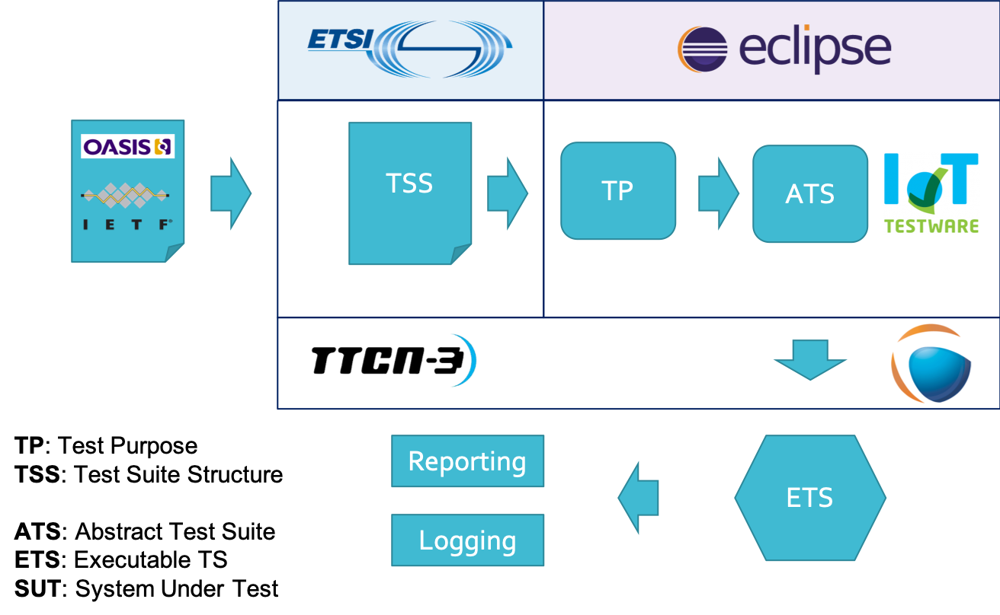

Protocol Conformance Testing¶
Contents
General¶
The ISO standard for the methodology of conformance testing (ISO/IEC 9646-1 and ISO/IEC 9646-2) as well as the ETSI rules for conformance testing (ETSI ETS 300 406) are used as a basis for the test methodology.
To implement this methodology we require several intermediary artefacts. Those single artefacts break down the whole complexity of conformance testing into smaller pieces, each with a specific perspective on the problem.
{kind=link}
Test Suite Structure¶
In the first step we define a TSS for a specific IUT.
TODO: link to ETSI document
Test Configurations¶
TODO: Why do we need Test configurations?
Test Purpose Catalogues¶
A TP (Test Purpose) is a formal description of a test case. A formal description in the form of a TP offers a possibility of describing the purpose of a test without having the later technical implementation in mind. Following the TSS the tester is supported in systematically covering the complete IUT specification.
TODO: link to ETSI document
The exemplary TP below shows a tabular representation for a simple MQTT test.
| TP-ID | TP_MQTT_BROKER_CONNECT_01 |
| Selection | PICS_Broker |
| Summary | The IUT MUST close the network connection if… |
| Reference | [MQTT-2.2.2-1], [MQTT-2.2.2-2] |
| Expected bahaviour | |
| initial condition statement | |
| ensure that statement | |
IoT-Testware Test Suites¶
This steps focuses on a technical implementation of the TPs. We use TTCN-3 and Eclipse Titan to implement each TP into a TC and orchestrate to executable test suites.